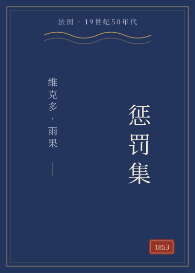
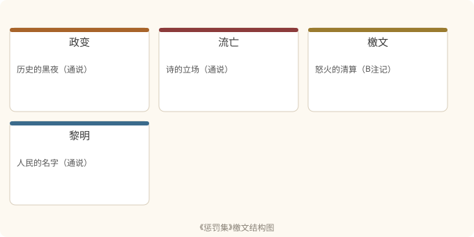

惩罚集
一、基本信息
| 作者 | 雨果 |
|---|---|
| 成书/出版 | 1853年（作者页注记：Britannica 列举——惩罚集（1853）） Victor Hugo — Encyclopaedia Britannica（百科全书） |
| 国别/地区 | 法国 |
| 时代 | 近代 · 19世纪50年代 |
| 体裁 | 诗集 |
| 语言 | 法语 |

《惩罚集》檄文结构图（主题·结构图）
二、创作背景
作者页注记：惩罚集 (1853)、静观集 (1856)——'诗集两峰（Britannica 列举）'。
Britannica：雨果——1851年政变后流亡（作者页语境——待核）。
题材（通说待核）：对拿破仑三世的 satire 檄文——流亡者的政治怒火。
三、内容脉络
（通说待核——Britannica未载篇目）政变黑史的诗体清算。
（通说待核）'黑夜'与'黎明'的道德对位。
四、主要人物表
| 人物 | 身份 | 说明 |
|---|---|---|
| 抒情'我' | 流亡者/先知 | （通说待核） |
五、主题与艺术特点
- 政治讽刺诗的巅峰（通说待核）。
- 流亡伦理（1851政变语境——通说待核）。
- 诗的人民性（通说待核）。
六、影响与评论
- Britannica：'诗集两峰'（作者页注记）。
Victor Hugo — Encyclopaedia Britannica（百科全书） - Britannica：雨果为浪漫主义领袖（作者页语境）。
Victor Hugo — Encyclopaedia Britannica（百科全书）
七、阅读建议
难点
- 1851年十二月政变史。
- 讽刺诗的用典。
- 《惩罚集》中译本（人民文学等——通说待核）。
- 法文原版（公有领域）。
雨果诗歌首选之一；与《静观集》对读。
八、待核实
- 篇目（《4.v.o.》《黑夜》等）核对（Britannica未载）。
- 1853年出版（Brussels说）待核。
- '流亡'细节待核。